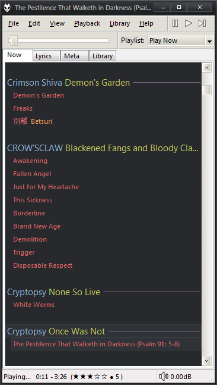
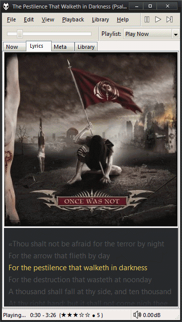
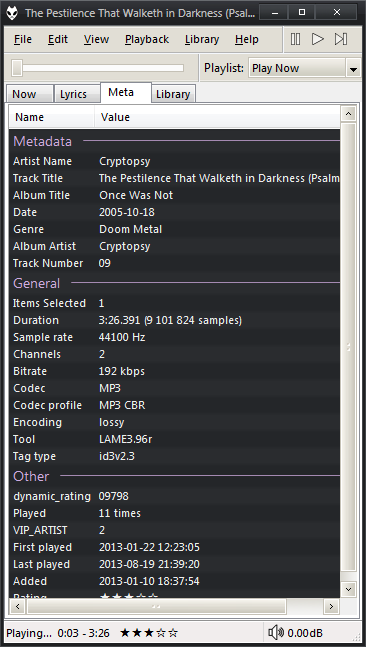
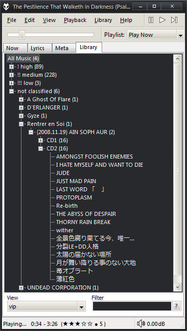

foobar2000 theme: Tomorrow Night Bright
Experimentando con el Default UI de foobar2000, salió este theme muy minimalista/simple con los colores de Tomorrow theme versión Night Bright.
Screenshots
Se tiene el menu + controles en una misma linea. Debajo, el seekbar + los playlists en un dropdown menu. En el status bar esta el tiempo, rating (vista) y volúmen.
Son cuatro vistas/tabs en total:
"Now" contiene el playlist actual, agrupado por artista (en azul) + album (verde). Los tracks solo muestran su titulo (rojo) y su comentario (naranja).

"Lyrics" tiene el cover art y la letra.

"Meta" son los datos del track que se esta reproduciendo.

"Library" es la biblioteca.

No tiene lista de playlist (solo el dropdown) porque no hay uno que me liste y prevenga el accidental borrado :P. Si necesitas manejarlos, vas a View > Playlist Manager.
Requerimientos
Poner la configuración del EsPlaylist (foo_uie_esplaylist.dll.cfg) en [lugar_donde_esta_foobar]/configuration (cosa que no tengas que configurar a mano) y el theme (tomorrowbright.fth) donde quieras.
Importá el theme (Preferences > Display > Default User Interface > Import theme). En el playlist, hace click derecho > grouping > inline - Tomorrow night bright. En el lyrics, edita el panel (panel preferences) y pone el highlight color a RGB 236,206,88 (amarillito).
El color de los "separadores" de los titulos (en el playlist, el %artist%, %album%; y en el meta el "metadata", "location", "other"...) esta configurado en Default User Interface > Colors and fonts (por si no te gusta el violeta).
Si queres poner otros botones de control, necesitas que esten en .ico de 16x16.
El theme para Windows es SlanXP2 for 7, por eso el DUI se ve lindo.
How to comment
- Tweet with an URL to this post (
http://blog.aquinzi.com/./es/foobar2000-theme-tomorrow-night/) - Write a post linking here and send me a Webmention.
- With disqus